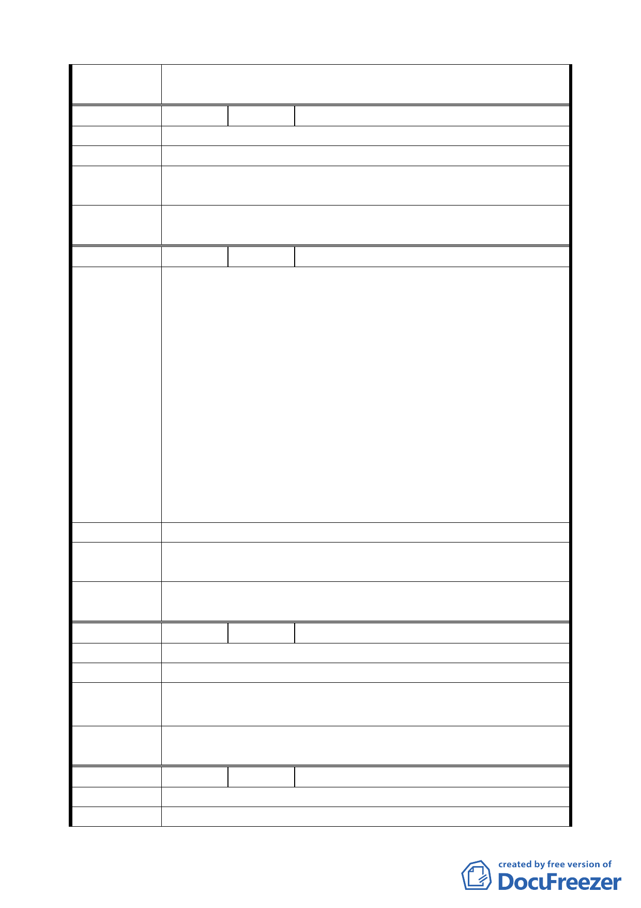

委 員 會 議 同意依專案小組審查結論辦理。
決議
編 號 ３ 陳情人 陳喜堂 胡田旺 魏富祥、沈條
陳 情 理 由 建議位置：北四光明路及礦港路口、光明路邊
建 議 辦 法 原為停車場用地、道路用地變為綠地乙案，應維持現狀。
專 案 小 組 93.10.14 專案小組第八次審查會議：維持停車場用地、道路
結 論 用地並配合綠地連貫性，做鋪面處理。
委 員 會 議 同意依專案小組審查結論辦理。
決議
編 號 ４ 陳情人 顏大峰
建 議 位 置：北投區光明路段磺港路口地號（北四）
建 議 理 由：如建為觀光夜市，可帶動此一地區商業繁榮機
會。（此地在 70 年代曾設置臨時市長約三年表現良好）。
一、北投自費娼那開始，各行業均受到不良的影響快二十年
了。除了溫泉尚可吸引外地人來此消費之外，此地人可說都
向外地消費（尤其是晚上），自捷運行駛之後，更為嚴重。原
陳 情 理 由 因就是沒地方去。如果在北四設置一處觀光夜市，相信此一
現象必可改觀。
二、北四這塊地，設置觀光夜市最為理想，其次仍為停車場，
再次才為綠地（豐年公園的綠地已足夠了）。
三、至於交通順暢一點，此現在路況評估，無論作何用途都
有困難，祇能在管理方面稍為加強即可解決。因此建請改為
觀光夜市。
建 議 辦 法 將現有停車場改為觀光夜市。
專 案 小 組 93.10.14 專案小組第八次審查會議：維持停車場用地、道路
結 論 用地並配合綠地連貫性，做鋪面處理。
委 員 會 議 同意依專案小組審查結論辦理。
決議
編
號5
陳情人 黃照鐘里長
陳 情 理 由 北投捷運站前綠帶
建 議 辦 法 變更為鄰里公園
專 案 小 組 94.3.3 專案小組第十一次審查會議：有關維護管理廣場綠化
結 論 問題請里長再與公園處協調。
委員會議
決議
同意依專案小組審查結論辦理。
編
號6
陳情人 黃照鐘里長
陳 情 理 由 減少里民長期受捷運噪音困擾及帶動地方商機
建 議 辦 法 將本里中央北路一段 197 巷至北投捷運站變更為商業區
第 三二 頁，共 49 頁